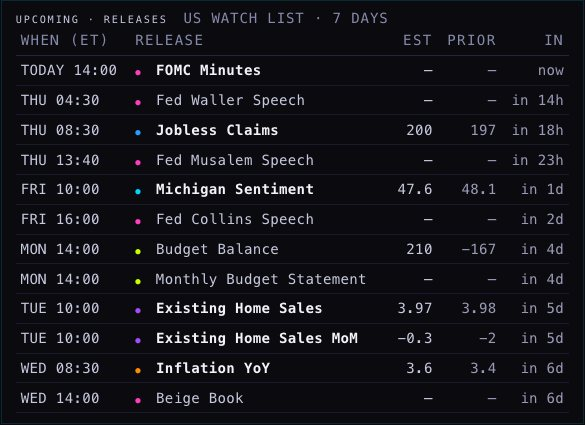
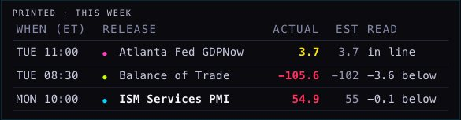
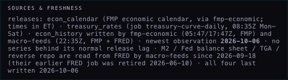

THE MACRO RAIL · KEEP / MERGE / DROP
7 Oct 2026 · a proposal only · nothing here is decided or built into the rail’s order · “this macro rail … we need a little bit of a rearrangement … we might not need it”
1 · CARD BY CARD
| ON THE RAIL TODAY | PROPOSAL | WHY |
|---|---|---|
| UPCOMING · RELEASES (US watch list, 7 days) | MERGE into THIS WEEK | It and PRINTED are one list cut in two. Joined, the NOW line sits between what has printed and what is coming, as it does everywhere else in the room. |
| PRINTED · THIS WEEK | MERGE into THIS WEEK | Same list. Its actual-against-expected reading is kept exactly. |
| TREASURY CURVE (one line of text) | MERGE into the curve picture | The picture carries the same three numbers and the shape. |
| UST LADDER (twelve rows) | MERGE into the curve picture | Twelve numbers in a column cannot show a shape. The numbers stay, in the small table under the picture. Built on the branch. |
| — | NEW TREASURY AUCTIONS | You asked what an auction tells us. This is the answer, on the day it happens. Built on the branch. |
| MACRO PRINTS · LATEST STORED (24 rows) | MERGE into the surprise strips | Every strip ends with the newest number, so the list repeats it. The five series nobody forecasts move to a small LIQUIDITY card: they are a set (the Fed’s balance sheet, the Treasury’s cash, reverse repo, M2, the mortgage rate). |
| four slow series in that list: potential GDP, real GDP per head, the credit-card rate, the recession probability | DROP from the rail | They change monthly or quarterly with a long lag and say nothing about today. Still stored; off the screen you read every day. |
| SOURCES & FRESHNESS | DROP from the rail → PAGE SPECS | It is an explanation, and explanations go at the bottom. A series that is actually late still says so on its own row. |
2 · TODAY → PROPOSED
TODAY (live pictures)
UPCOMING · RELEASES

PRINTED · THIS WEEK

TREASURY CURVE
UST LADDER

MACRO PRINTS · LATEST STORED

SOURCES & FRESHNESS

PROPOSED (the three pictures are the branch; the two lists are drawn here with today’s real numbers)
THIS WEEK · US
| WHEN (ET) | RELEASE | ACTUAL | EXPECTED | READ |
|---|---|---|---|---|
| MON 10:00 | ISM Services PMI | 54.9 | 55 | 0.1 below |
| TUE 08:30 | Balance of Trade | −105.6 | −102 | 3.6 below |
| TUE 11:00 | Atlanta Fed GDPNow | 3.7 | 3.7 | in line |
| WED 13:00 | 10-Year Note Auction · $39B | 5.300% | — | cover 2.77 · strong |
| — NOW — | ||||
| WED 14:00 | FOMC Minutes | — | — | |
| THU 08:30 | Jobless Claims | — | 200 | before 197 |
| THU 13:00 | 30-Year Bond Auction · $22B | — | — | |
| FRI 10:00 | Michigan Sentiment | — | 47.6 | before 48.1 |
| WED 08:30 | Inflation YoY | — | 3.7 | before 3.4 |
One list, the NOW line between what has printed and what is coming. Auctions join it with their size and, once printed, their stop.
TREASURY CURVE

TREASURY AUCTIONS

MACRO PRINTS · SURPRISES

LIQUIDITY
| LATEST | CHANGE | AS OF | |
|---|---|---|---|
| Fed balance sheet | $6.743T | −$4.7B on the week | 30 Sep |
| Treasury’s cash (TGA) | $948.7B | −$28.4B on the week | 30 Sep |
| Reverse repo | $0.4B | −$0.6B on the day | 6 Oct |
| M2 | $23.34T | +$124.9B on the month | Aug |
| 30-year mortgage | 7.28% | +0.25 on the week | 1 Oct |
The five series nobody forecasts, as a set. Real numbers from what is stored; this card is drawn here only, it is not built.
3 · THE OTHER OPTION · NO RAIL
If the rail is not needed: the calendar takes the whole width, THIS WEEK moves under the slider, and the rest becomes a third tab beside RELEASES and REGIME.
RELEASES TAB
A NEW TAB · RATES & PRINTS
- For it: the calendar gets about two-thirds more width (954 px becomes 1,586 on the MacBook screen), and the strips get room to show every print without scrolling.
- Against it: the curve and today’s auction are one click away instead of always in view.
- Recommendation: keep a rail, with the four cards above plus LIQUIDITY. On an auction day or a CPI morning you want the result and the curve beside the calendar, not behind a tab.
PAGE SPECS
The TODAY column is the live Hub, pictured 7 Oct 2026 about 2:00 PM New York, one card at a time from one page load. The three pictures in the PROPOSED column are the branch’s own cards with real data. THIS WEEK and LIQUIDITY are drawn on this page from numbers stored today (econ_calendar, treasury_auctions as read from TreasuryDirect, econ_history); neither exists in the product.
KEEP / MERGE / DROP is marked by the border: solid for new or kept, dashed for merged, dotted and struck through for dropped.